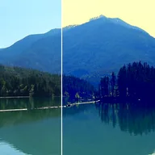

Kleurbalans

Duwt de schaduwen, middentonen en hooglichten elk naar een eigen kleur (grijs laat een bereik ongewijzigd). Helderheid behouden houdt de helderheid van elke pixel vast terwijl de kleuren veranderen.
Drie kleurvakjes, Schaduwen, Middentonen en Hooglichten, duwen de donkere, middelste en lichte delen van het beeld naar hun eigen kleur. Een grijs vakje laat dat bereik zoals het is. Hoeveelheid mengt het resultaat met het origineel. Standaard krijg je een blauwgroen-oranje look: koele schaduwen en warme hooglichten.
Instellingen
| Instelling | Type | Bereik | Standaard |
|---|---|---|---|
| Schaduwen | Kleur | – | #3060A0 |
| Middentonen | Kleur | – | #808080 |
| Hooglichten | Kleur | – | #FFB070 |
| Hoeveelheid | Getal | 0 tot 1 | 0.5 |
| Helderheid behouden | Aan of uit | – | Aan |
| Stijl | Keuze | Klassiek, Standaard | Standaard |